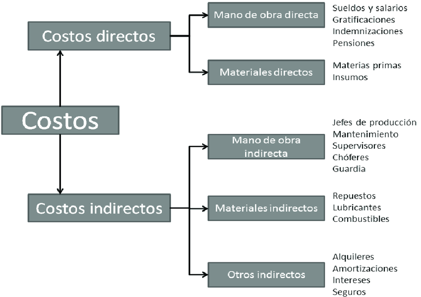

Navega por las pestañas para explorar la interpretación de los costos operativos y su desglose.
Un costo operativo es el gasto que incurre una empresa para mantener su operación diaria y producir bienes o servicios. Incluye todos los desembolsos necesarios para que la actividad productiva funcione, excluyendo inversiones en activos fijos o pagos de deudas.
En minería o industrias de proceso, por ejemplo, los costos operativos incluyen combustible, electricidad, repuestos, personal operativo y mantenimiento de equipos.
Costos directos: relacionados directamente con la producción, como materia prima, energía y mano de obra directa.
Costos indirectos: gastos necesarios para operar pero no directamente atribuibles a un producto específico, como mantenimiento, administración, seguros y suministros.
| Concepto | Tipo de Costo | Costo Unitario Estimado (USD/t mineral) | Observaciones |
|---|---|---|---|
| Energía eléctrica (molinos, fajas, chancadora) | Directo | 4.5 | Basado en consumo de molinos SAG y bolas de 5,652 t/h |
| Agua de proceso | Directo | 0.8 | Incluye dilución, lavado de pebbles e hidrociclones |
| Bolas de acero | Directo | 2 | Carga continua y recirculante en molinos SAG y de bolas |
| Diésel y combustible móvil | Directo | 1.2 | Para diésel en molino (Mo) y equipos de pila de acopio |
| Cal y reactivos | Directo | 1 | Ajuste de pH y preparación de pulpa para flotación |
| Mantenimiento de equipos rotativos | Directo | 3.5 | Incluye revisiones y reparaciones de molinos y chancadora |
| Repuestos transportadores y chancadoras | Directo | 1.5 | Correas, zarandas, rodillos y chancadoras de pebbles |
| Lubricantes y consumibles | Directo | 0.5 | Grasas, filtros y otros consumibles de operación |
| Concepto | Tipo de Costo | Costo Unitario Estimado (USD/t mineral) | Observaciones |
|---|---|---|---|
| Personal operativo | Indirecto | 2 | Operadores, sala de control y supervisión |
| Ventilación y aire comprimido | Indirecto | 0.3 | Incluye ventilador túnel y sistemas de aire |
| Supresión de polvo y colectores | Indirecto | 0.4 | Energía y mantenimiento de filtros y colectores |
| Seguridad industrial y ambiental | Indirecto | 0.6 | EPP, monitoreo y control ambiental |
| Costos administrativos | Indirecto | 0.8 | Supervisión, planificación y control de operación |
| Depreciación de equipos e instalaciones | Indirecto | 3 | Molinos, fajas, edificios y estructuras |
| Gestión de residuos y derrames | Indirecto | 0.5 | Recuperación de mineral, manejo de derrames menores |
| Servicios generales de planta | Indirecto | 0.3 | Iluminación, limpieza, comunicaciones |
Descripción: Este costo incluye el consumo de electricidad de todos los equipos principales del circuito. Es fundamental para mantener el movimiento continuo del mineral y asegurar que los procesos operen de manera constante.
Interpretación: Representa una parte significativa del costo operativo. Optimizar el uso de energía permite reducir costos, mejorar la sostenibilidad y asegurar la continuidad operativa del circuito.
Descripción: Se refiere a la adquisición y dosificación de bolas de acero usadas como medio de molienda. Las bolas permiten la reducción eficiente del tamaño del mineral, facilitando la liberación de minerales valiosos.
Interpretación: Es un gasto en insumos críticos. La correcta gestión y reposición de las bolas influye en la eficiencia de molienda y asegura que el circuito produzca un tamaño de partículas uniforme.
Descripción: Corresponde a la adquisición y dosificación de cal y otros reactivos para el ajuste de pH y preparación del mineral para la flotación. Son esenciales para mantener las condiciones químicas óptimas.
Interpretación: Es una inversión directa en materiales que aseguran la eficiencia metalúrgica. Un manejo adecuado permite maximizar la recuperación de minerales y minimizar pérdidas.
Descripción: Abarca las actividades de mantenimiento preventivo y correctivo de equipos como molinos, chancadoras y bombas. Su objetivo es asegurar la operación continua y prolongar la vida útil de los equipos.
Interpretación: Es una inversión clave para garantizar la confiabilidad y eficiencia del circuito. Un mantenimiento adecuado reduce paradas no planificadas y optimiza la producción.
Descripción: Incluye a todos los trabajadores involucrados en la operación del circuito (operadores de molinos, sala de control, etc.). Su labor es esencial para mantener la continuidad y seguridad del proceso.
Interpretación: Refleja la inversión en capital humano. Una adecuada capacitación y distribución de roles impacta directamente en la productividad y minimiza riesgos de accidentes.
Descripción: Abarca las medidas y recursos para proteger la salud del personal y el entorno, incluyendo EPP, monitoreo ambiental y programas de seguridad.
Interpretación: Es la inversión en condiciones seguras de trabajo y cumplimiento de normativas. Una gestión efectiva previene accidentes y reduce riesgos legales.
Descripción: Refleja la pérdida de valor de los activos (molinos, fajas, edificios) debido al uso, desgaste y envejecimiento a lo largo del tiempo.
Interpretación: Es un gasto contable que permite recuperar la inversión en activos. Considerar la depreciación es clave para evaluar la rentabilidad y planificar reemplazos futuros.